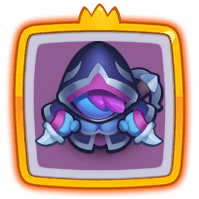
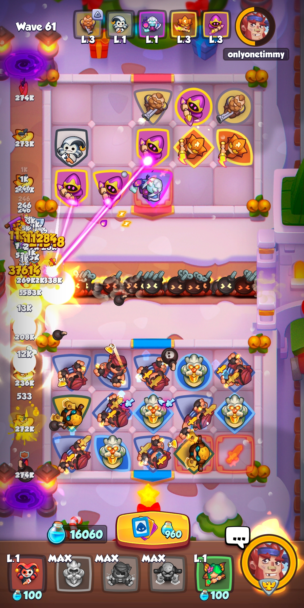
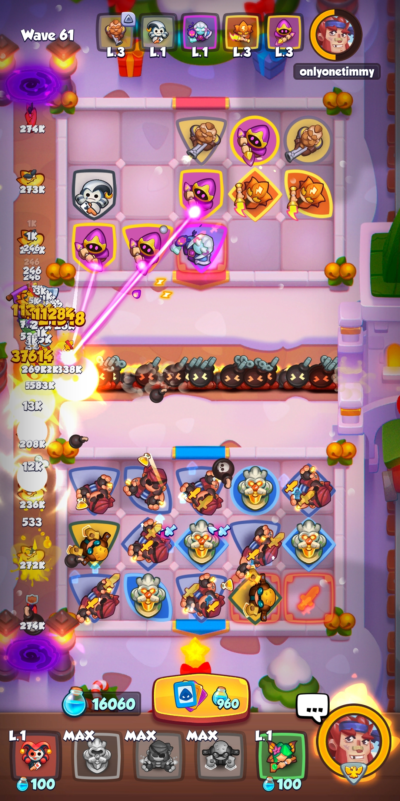

Demon Hunter teams
Demon Hunter has a higher attack speed at ranks 1-2. At ranks 3-6, she attacks more targets. At rank 7, she occasionally fires at a single target, instantly killing ordinary monsters and damaging bosses and mini bosses for a specific % of their health.
She is the go-to unit if you are looking to surpass high amounts of waves above 60. However, you need another player to help you level your units up to tier 7, in other words your co-op partner must have a Shaman support deck.
Bombardier is crucial to counter boss abilities that may disrupt your Statue positioning and/or randomize your units.
Executioner finishes off bosses and mobs when they have low health.
Most players recommend using Banner for the highest attack speed but you can try running Knight Statue for additional crit damage.
Here are a few of the most popular DH teams:
1. Reaper has a chance to kill a normal mob instantly.



2. Cold Mage slows the incoming enemies.


Zealot teams
Zealot puts out high damage but is slow compared to other units and is pretty weak unless he is next to a buff building. If you don't have Knight Statue or don't want to deal with the hassle of using it, you can run Grindstone instead but don't expect the same results.
Harlequin can copy Cauldron for mana production, copy Statue to keep it's numbers even, copy Dryad for upgrades, or copy an unwanted unit so you can merge it.
You can copy a Zealot with Harlequin but he will receive a broken sword debuff and deal less damage.
These teams are good for easy gold farming since you can consistently carry/solo to wave 60:
1. Cauldron produces lots of mana in order to upgrade Zealot and Knight Statue as high as possible with Dryad.


Crystalmancer teams
Crystalmancer specializes in killing bosses but has trouble dealing with higher level waves of mobs. To compensate for this you can try running Hex which gives units a chance to instantly destroy a normal mob, or try running a slowing unit.
Crystalmancer does more damage when more copies of him are on the board so it's a good idea to spam him.
You can copy a Crystalmancer with Harlequin but he will receive a broken sword debuff and deal less damage.
Instead of Knight Statue you can run Grindstone or Hex.
Harlequin can copy Cauldron for mana production, copy Statue to keep it's numbers even, copy Dryad for upgrades, or copy an unwanted unit so you can merge it.
Here are a few teams I have tested:
1. Cauldron produces lots of mana in order to upgrade Crystalmancer and Knight Statue as high as possible with Dryad.

Corsair teams
The Corsair is a legendary unit which throws explosive traps on the battlefield. He has a chance to throw a nasty bomb dealing a certain percentage of the target's current health in damage. The duration for Nasty Bomb and Explosive Bomb last 30s and 60s respectively. As a damage unit the merge rank only increases the attack speed by: Attack speed / merge rank. For example a merge rank 3 hits three times faster than a merge rank 1.
The Warlock boss on wave 40 will remove all your placed bombs from time to time, so you need a teammate that can kill him.
Instead of Knight Statue you can use Banner for a higher attack speed buff.
Harlequin can copy Cauldron for mana production, copy Statue to keep it's numbers even, copy Dryad for upgrades, or copy an unwanted unit that you need to merge/remove.
You can copy a Corsair with Harlequin but he will receive a broken sword debuff and deal less damage. You may switch a debuffed Corsair with a Portal Keeper to remove the broken sword.
Here are a few teams I have played:
1. Portal Keeper makes it easier to place your Corsairs next to a Knight Statue. Executioner finishes off bosses and mobs when they have low health.
 
6. Trapper slows and debuffs the enemies, making them easier to kill.

6. Trapper slows and debuffs the enemies, making them easier to kill.
Inquisitor teams
The Inquisitor is a legendary rarity card that attacks the first target on the path. Each hit on the same target increases its damage. When his target changes (if the current target dies or falls behind) the damage increase resets. Damage doubles roughly after 30 hits and triples in 200 hits. A Mana Power-up reduces the number of hits required.
If the number of Inquisitors on your field is equal to 1, 4, 7, or 10 they activate. Upon activation, the Inquisitor's rate of fire doubles, and he deals area-of-effect damage. He keeps any damage increases upon activation.
Instead of Knight Statue you can try Grindstone or Hex.
Bombardier is a good option to counter boss abilities that may disrupt your unit positioning.
Harlequin can copy Statue to keep it's numbers even, copy Dryad for upgrades, or copy an unwanted unit that you need to merge/remove.
Here are a few teams I have tried:
1. Knight Statue can provide an attack speed + critical chance buff to units placed next to it.
Other damage teams
There are many other damage teams out there that you can try for fun.
Blade Dancer for example, gains an attack speed bonus when not in contact(top, bottom or sides) with other Dancers. Also, her damage increases for each Dancer on your side of the battlefield.
Knight Statue can provide an attack speed + critical chance buff to units placed next to it.
As usual, you can try substituting Knight Statue with Grindstone, Banner or Hex and see what works best for you.
Harlequin can copy Cauldron for mana production, copy Statue to keep it's numbers even, copy Dryad for upgrades, or copy an unwanted unit that you need to merge/remove.
Here are a few teams I have played with good results:
1. This team produces plenty of mana so that you can upgrade your units quickly. Blade Dancer combines with Knight Statue for high damage. It can be a bit tricky to set up your optimal position at first; BD should be placed on the 8 light squares if possible and watch out for the Bedlam boss.
 2. This team runs Portal Keeper so that you can set up your position with ease.
2. This team runs Portal Keeper so that you can set up your position with ease.
 8. This team is easier to play because it runs Grindstone instead of Statue.
8. This team is easier to play because it runs Grindstone instead of Statue.